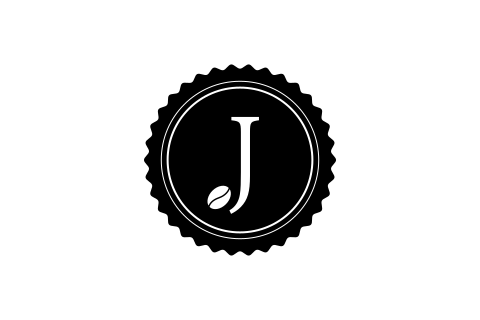

logo設計 ( 3/8號版本 )
01
最原本的設計
咖啡豆萃取了原汁而滴下了香醇的咖啡，詮釋了咖啡機滴出美味的咖啡。
另一個意象也是笑口開懷的臉孔，呈現快樂，美好的一天
02
水滴改為更小一級
咖啡杯以鳥瞰方式結合了英文字，以及用五線譜讓咖啡跟音樂結合再一起的意象
03
以J跟咖啡豆結合
以jazz 的 J 為主要是視覺，搭配咖啡豆 延伸出音樂的符號，
最後滴下到咖啡杯完成整個流程

04
以J跟咖啡豆結合
J 的字體比較細長